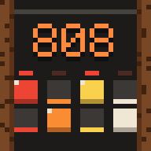

808Synth
A synth and an 808-style drum machine in your pocket. By Tuesday Games.
Support
For help, a bug report or a suggestion, tap Send feedback under ☰ in the app (it fills in your app version and device for you), or email info@tuesdaygames.com. It helps to mention which screen you were on and what happened.
How to play
808Synth has two screens. Switch between them with SYNTH and DRUMS at the top left. Play, stop and the tempo sit at the top of both, so a beat keeps going while you play the synth.
- Synth: play the keyboard with as many fingers as you like, or slide one across the keys. Touch lower on a key to play it louder. Drag a knob or slider up or down to change the sound, and double-tap it to put it back. Pick a built-in sound with the arrows by its name.
- Drums: tap a pad to hear it and pick it. Its four knobs shape the sound. Tap the colored step buttons to say when it plays, then press play.
- Accent makes a step or pad hit harder. REC records pad hits into the beat while it plays.
- Patterns A to H are separate beats. Switching while playing waits for the end of the bar, so you stay on the beat. SONG plays patterns in the order you tap them.
- Tempo: drag the number up or down, or tap TAP along with a song.
Common questions
What's free, and what's in the full version?
The whole synth, the whole drum kit, patterns A and B, and three premade beats are free. The full version is a one-time purchase that adds song mode, patterns C to H, and every premade beat. Export and share, unlimited saves, the full sampler and MIDI are on the way and will be part of it too. Open it with the ☰ button at the top right.
I bought the full version on another device.
Open ☰ at the top right and tap Restore purchases.
There's no sound.
808Synth plays through the silent switch, like a music app, so check the volume first. If headphones or a speaker are connected by Bluetooth, the sound goes there. Bluetooth adds a small delay that no app can remove; wired headphones or the phone's speaker feel instant.
The screen went dark in the middle of a beat.
Under ☰, turn on Keep the screen on while the beat plays.
The phone doesn't vibrate.
Check Haptics under ☰, then your iPhone's Settings, then Sounds & Haptics, then System Haptics. iPads don't have haptics.
What does the tip jar do?
Tips are optional and unlock nothing. They help us keep making apps. Thank you!
Privacy
808Synth collects no data. Read the privacy policy.